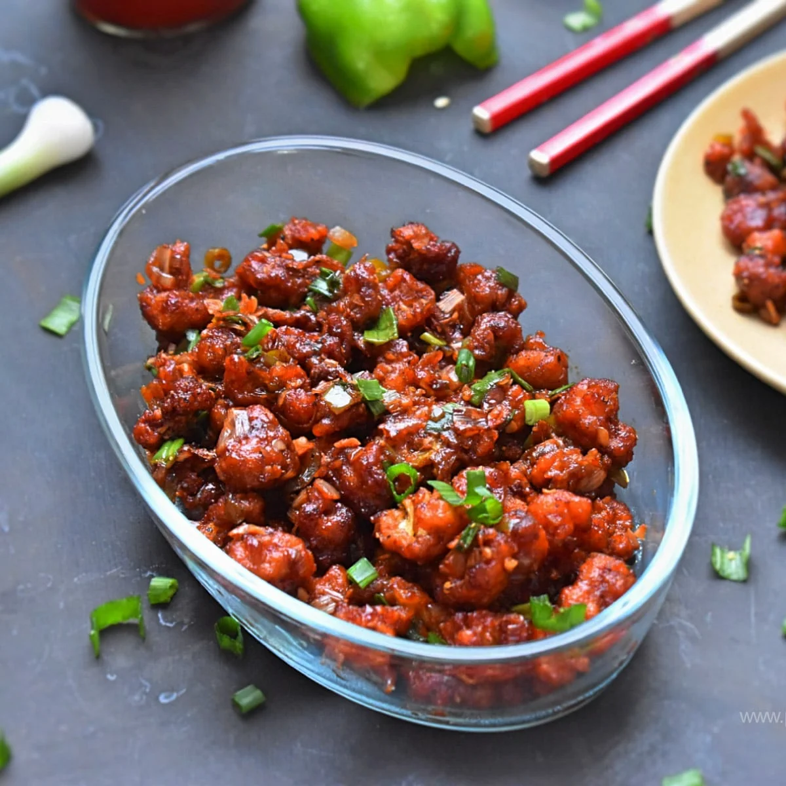
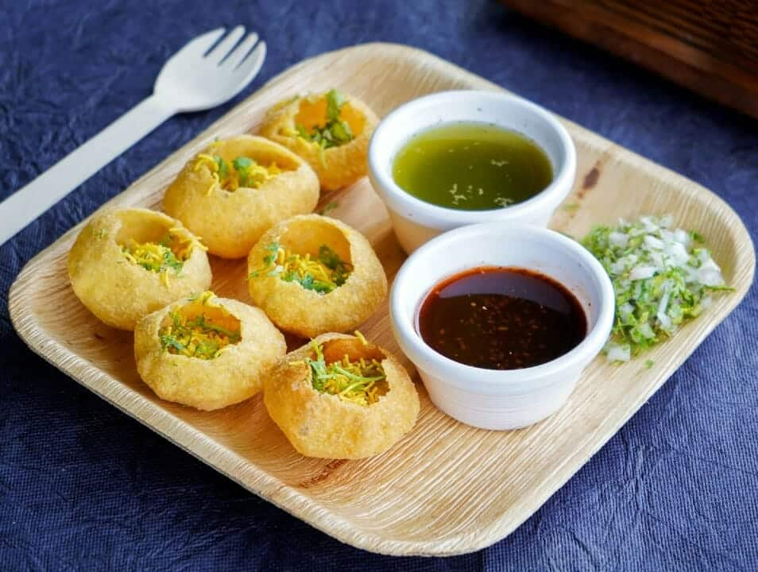
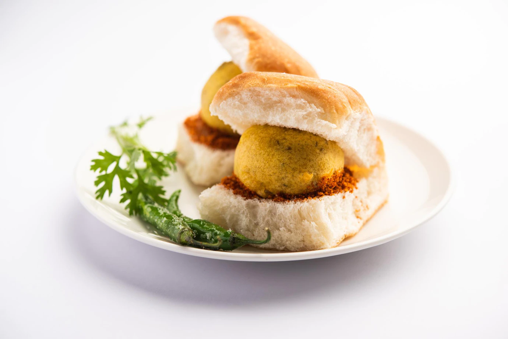

List of Circketers
- Sachin
- Virat Kohli
- Dhoni
- Sharma
List of Subjects
- Kannada
- English
- Hindi
- Maths
- Science
- Social Science
List of Snacks
- Gobi :
- The Gobi Manchurian Benefits all stem from the goodness of cauliflower. It is extremely rich in vitamins and minerals and is a very nutritious vegetable that your diet is sure to benefit from. It provides a good amount of fiber that helps ease digestive distress and significantly improves digestion.

- Pani Puri :
- Tangy, spicy tamarind water or mint and coriander flavored water make Pani Puri a tangy, spicy chaat. This is apart from its stuffing. People also add additional spices to these flavorful waters according to their taste. This enhances its fragrance.
However, while pani puri may be delicious, it is a highly unhealthy snack, given that it is high in fats and calories, leading to elevated cholesterol and blood pressure levels. Additionally, if the water used is not filtered, it can cause a host of gastric problems.

- Vada Pav :
- Usually, groundnut oil is used to prepare the vada pav. The resulting wada is then sandwiched between a soft bread bun filled with garlic chutney prepared by grinding garlic, onion powder, chilli powder, and salt. The secret for a good vada pav lies in its coating and thinner the coating; the favourable the vada pav.Vada pav is deep-fried and hence contains high levels of trans fats increasing your risk of cholesterol and heart disease.
